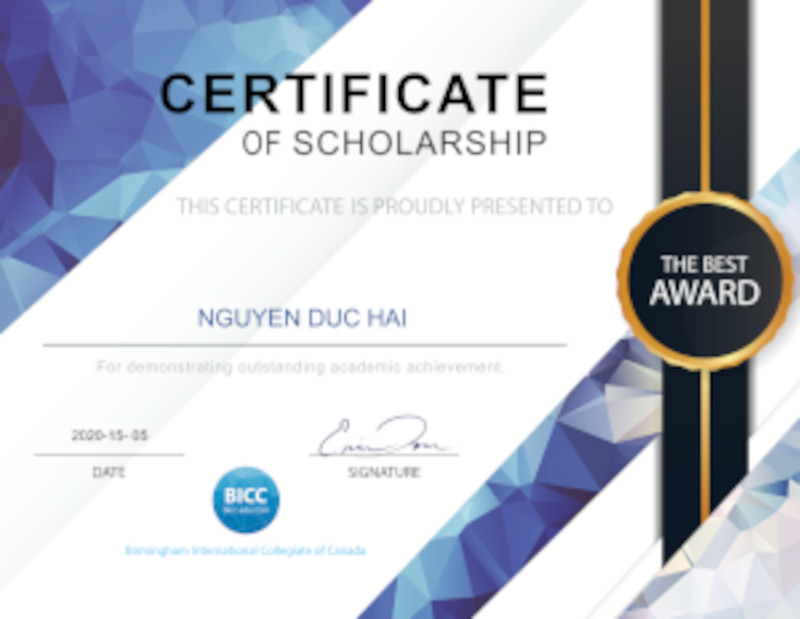
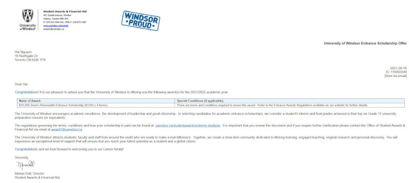

Scholarship
Throughout my academic journey, I have diligently worked to achieve various scholarships and academic honors. These accolades are a testament to my commitment to learning and the effort I have invested from a young age. By maintaining high grades and actively engaging in extracurricular activities, I have been fortunate enough to receive scholarships that recognize my dedication and academic achievements.
I received the first scholarship during my time at Birmingham International Collegiate of Canada while I was in high school. This recognition served as a validation of my hard work, academic achievements, and dedication to my studies. It further motivated me to continue striving for excellence in my education.
Upon entering the University of Windsor, I was honored to receive another entrance scholarship. This scholarship not only provided financial assistance but also reaffirmed my commitment to pursuing higher education and fueled my passion for further academic and personal growth. These scholarships have been instrumental in supporting my educational journey and have inspired me to continue excelling in my chosen field of software engineering.